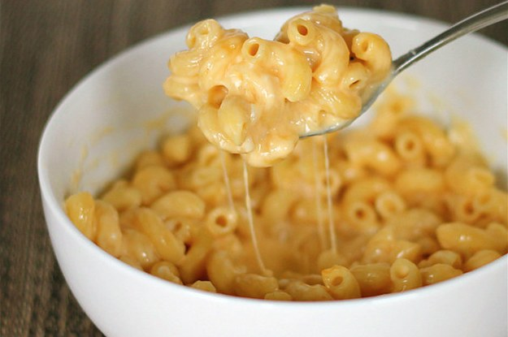
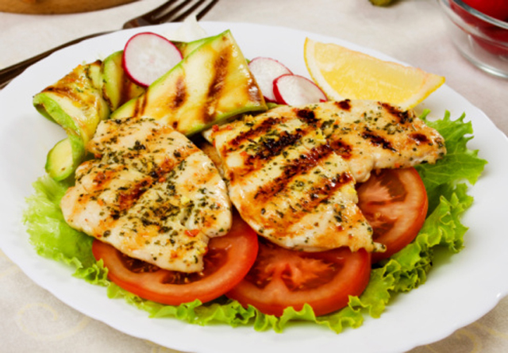

Cocinando
El blog de los amantes de la Gastronomia
Favoritos:





Arroz frito con camarones
2 de Septiembre 2016

- Tener listo el arroz blanco. Prepara los vegetales. Corta la zanahoria, cebolla, diente de ajo, jengibre. Reserva.
- Vierte 2 cucharadas de aceite vegetal en una sartén grande y honda o en un wok la calentamos fuego medio. Cocina los vegetales en la sartén durante 3 minutos. Pon las zanahorias, la cebolla, el ajo, los brotes de soya y el jengibre en la sartén. Añade 1 cucharadita de sal y una pizca de pimienta negra y ½ cucharadita de salsa de pescado. Los vegetales deben sudar un poco, pero no al punto de dorarse.
- Mientras tanto, en otra sartén con una cucharada de aceite freiremos los camarones durante 3 o 4 minutos hasta que estén tiernos. Y pon a la sartén o wok. con los vegetales.
- Pon las 2 cucharadas de aceite de sésamo, y Añade el arroz. Fríe el arroz y los demás ingredientes durante 2 a 3 minutos, solo el tiempo suficiente para calentar el arroz y mezclar los ingredientes. Sigue revolviendo mientras fríes el arroz. Añade 3 cucharadas de salsa de soya a la mezcla y fríe los ingredientes durante 30 segundos más.
- En la misma sartén donde hicimos los camarones, cocinamos los huevos batidos con una pizca de sal como si hiciésemos una tortilla. Y Añadimos al arroz la tortilla de huevos cortada en trozos pequeños, rectificamos de sal y removemos bien hasta que esté mezclado. Añade ¼ taza de hojas de cilantro picado y Sirve.

Maria23: Que gran post, me alegra haber aprendido a realizar este tipo de arroz.

Juan_F: Una pregunta, ¿cuanto tiempo tengo que dejar el arroz cociendo?
Roberto87: Me gusto mucho la forma que describes como hacer este arroz
Club Sandwich
25 de Noviembre 2016

- Unta los panes con mayonesa y mostaza.
- Enmedio de dos rebanadas de pan, agrega el pollo, la lechuga y el tocino, haz lo mismo para el otro sandwich.
- Luego pon encima la tercera rebanada de pan el jamón, jitomate y aguacate.
- Parte el sandwich en 4 partes (en triángulos).
- Ponle a cada triángulo un palillo para que no se desmorone.
Sandra_V: Ya quiero hacerlo en casa. Me gusto mucho esta receta.